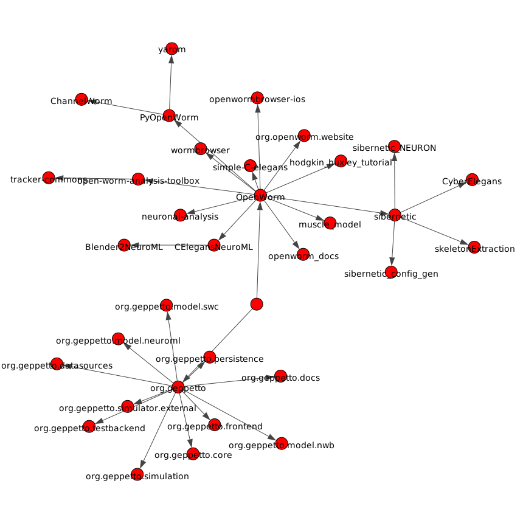

Repositories

Repository graph circa October 2019 from https://igraph.org/python/ courtesy Casper da Costa-LuisView the full current list of repositories on GitHub.
The repositories fall into the following six project areas shown below:
- Neuromechanical modeling with Sibernetic
- Geppetto Simulation Engine
- Movement validation
- Optimization engine
- Data collection and representation
- Community outreach
Neuromechanical Modeling with Sibernetic
| Repository | Description | Language |
|---|---|---|
| Smoothed-Particle-Hydrodynamics | Known as Sibernetic, this is a C++ implementation of the Smoothed Particle Hydrodynamics algorithm for the OpenWorm project. | C++ |
| ConfigurationGenerator | Generation start scene configuration for PCI SPH solver | JavaScript |
| CyberElegans | Neuromechanical model of C. Elegans | C++ |
Geppetto Simulation Engine
| Repository | Description | Language |
|---|---|---|
| org.gepetto | Geppetto Main Bundle and packaging | Java |
| org.geppetto.solver.sph | PCI SPH Solver bundle for Geppetto | Java |
| org.geppetto.simulator.jlems | jLEMS based simulator for Geppetto | Java |
| org.geppetto.model.neuroml | NeuroML Model Bundle for Geppetto | Java |
| org.geppetto.core | Geppetto core bundle | Java |
| org.geppetto.frontend | Geppetto frontend bundle - Web application | Java |
| org.geppetto.testbackend | Geppetto test backend for Geppetto | Java |
| org.geppetto.simulator.sph | SPH Simulator bundle for Geppetto | Java |
| org.geppetto.simulation | Generic simulation bundle for Geppetto | Java |
| org.geppetto.model.sph | PCI SPH Model Bundle for Geppetto | Java |
| org.geppetto.samples | Sample simulations for Geppetto | Descriptive |
| org.geppetto.templatebundle | Template bundle | Java |
Movement Analysis
See the movement analysis project page for the full repository list.
Optimization Engine
| Repository | Description | Language |
|---|---|---|
| HeuristicWorm |
|
Data Collection and Representation
| Repository | Description | Language |
|---|---|---|
| wormbrowser | The Worm Browser -- a 3D browser of the cellular anatomy of the c. elegans | Javascript |
| openwormbrowser-ios | OpenWorm Browser for iOS, based on the open-3d-viewer, which was based on Google Body Browser | Objective-C |
| CElegansNeuroML | NeuroML based C. elegans model, contained in a neuroConstruct project | Java |
| Blender2NeuroML | Conversion script to bring neuron models drawn in Blender into NeuroML format | Python |
| muscle_model | model of C.elegans muscle in NEURON / Python | Python |
Community Outreach
| Repository | Description | Language |
|---|---|---|
| org.openworm.website | OpenWorm Website | Python |
| OpenWorm | Project Home repo for OpenWorm Wiki and Project-wide issues | Matlab |
| openworm_docs | Documentation for OpenWorm |